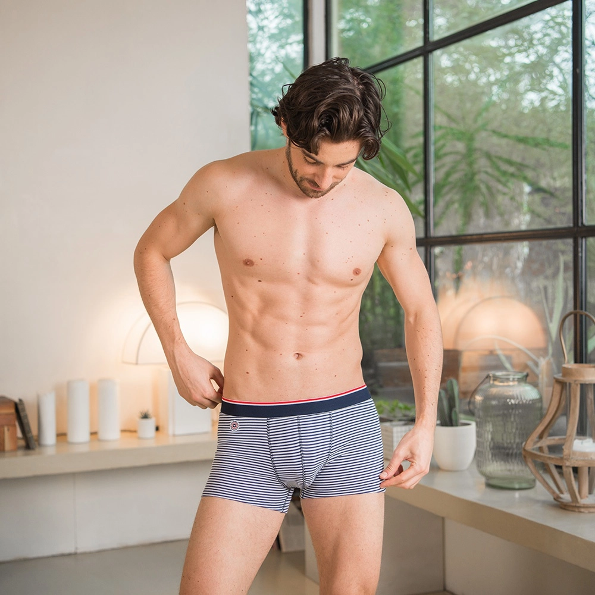

Accueil / Masculin /Sous-vêtement Homme / Boxers Homme

Le Marius
Boxer court uni en coton
40,00€Le prix juste
Guide des tailles
Livraison offerte dès 50€ d'achat
Livraison Colissimo estimée le 19 janvier
Retours gratuits pendant 30 jours
Fabriqué avec amour à Saint-André-Lez-Lille (59)
Couleur: rayé bleu et blanc
Le Marius marinière avec son élastique tricolore « signature » et sa cocarde brodée.
Ce produit est fabriqué près de chez vous et soutient l'emploi local.